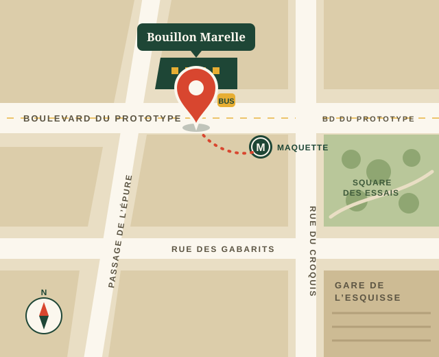

Horaires, accès, questions
Infos pratiques
Ouvert tous les jours de l’année sauf le 25 décembre et le 1er mai, de midi à minuit, sans interruption. Voici tout ce qu’il faut savoir avant de pousser la porte.
Horaires
Midi, minuit, et tout ce qu’il y a entre les deux.
Ouvert tous les jours, de midi à minuit
La cuisine prend les dernières commandes à 23 h 30. Le plat du jour est servi dès midi, jusqu’à épuisement. Entre 15 h et 18 h, c’est l’heure la plus calme : parfait pour venir en famille ou avec une poussette.
| Lundi | 12 h – minuit |
|---|---|
| Mardi | 12 h – minuit |
| Mercredi | 12 h – minuit |
| Jeudi | 12 h – minuit |
| Vendredi | 12 h – minuit |
| Samedi | 12 h – minuit |
| Dimanche | 12 h – minuit |

Accès
3 boulevard du Prototype, 75010 Paris
- Métro
- Maquette (lignes 4 et 7), sortie n° 2 « boulevard du Prototype », 2 minutes à pied
- Train
- Gare de l’Esquisse, 5 minutes à pied par la rue des Gabarits
- Bus
- Lignes 38 et 46, arrêt « Prototype – Gabarits », devant la porte
- Vélo
- Station de vélos en libre-service et arceaux face au n° 6
- Voiture
- Parking public de l’Esquisse, 200 m. Le boulevard est en zone piétonne le dimanche.
Accessibilité
Une salle pour tout le monde.
De plain-pied
Entrée sans marche par la porte de droite, large de 90 cm. Toute la salle du rez-de-chaussée est accessible en fauteuil.
Toilettes adaptées
Au rez-de-chaussée, avec barres d’appui et table à langer. La mezzanine, elle, n’est accessible que par l’escalier.
Carte lisible
Carte en grands caractères disponible à l’accueil, et lue à voix haute par l’équipe sur simple demande.
Chiens d’assistance
Bienvenus, avec une gamelle d’eau. Les autres chiens aussi, s’ils restent sages sous la table.
Boucle magnétique
Une boucle à induction portable est disponible au comptoir pour les personnes appareillées.
En famille
Chaises hautes, menu enfant à 8 €, crayons de couleur et une marelle dessinée sur les sets de table.
Questions fréquentes
Ce qu’on nous demande au téléphone.
Une autre question ? Écrivez-nous à bonjour@bouillon-marelle.example ou appelez le 01 99 00 41 06 entre 15 h et 18 h.
Peut-on réserver une table pour deux ?
Non, et c’est voulu : la salle tourne vite et l’attente dépasse rarement un quart d’heure, même le samedi soir. Pour patienter au chaud, vous pouvez rejoindre la file d’attente en ligne depuis cette page. Les réservations sont réservées aux groupes de 10 personnes et plus.
Quelle est l’heure la plus calme ?
Entre 15 h et 18 h, et après 22 h en semaine. Le vendredi et le samedi entre 19 h 30 et 21 h, prévoyez un peu d’attente sur le trottoir.
Quels moyens de paiement acceptez-vous ?
Carte bancaire (y compris sans contact et sur téléphone), espèces et titres-restaurant, papier ou carte, dans la limite légale. Nous ne prenons plus les chèques.
Avez-vous des plats végétariens et sans gluten ?
Oui : une dizaine de plats végétariens sont signalés par un V sur la carte, et chaque plat indique ses allergènes. Signalez toute allergie au serveur, la cuisine adapte ce qu’elle peut.
Peut-on venir avec une poussette ou un chien ?
Bien sûr. Pour une poussette, venez plutôt hors des heures de pointe, on vous installera près de l’entrée. Les chiens sont acceptés en salle.
Faites-vous de la vente à emporter ?
Oui, au comptoir, toute la journée : le plat du jour, le bourguignon et les desserts en bocaux consignés (1 € rendu au retour du bocal).